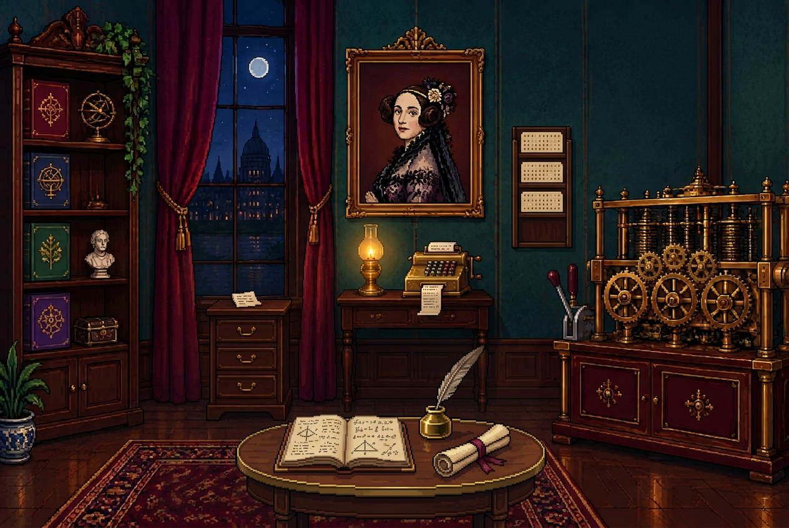

FASE 02
0/5
O gabinete de Ada Lovelace
Londres, 1843

I1 II8 III4 IV3Londres, 1843

I1 II8 III4 IV3As engrenagens que ativam a Máquina Analítica estão escondidas pelo gabinete. Resolva cinco desafios e faça o programa funcionar.
Encontre as cinco engrenagens. O cronômetro começa agora, observe cada detalhe com atenção.
Ada Lovelace percebeu que uma máquina poderia trabalhar não apenas com números, mas também com símbolos, música e ideias — uma visão pioneira da computação.
“A imaginação é a faculdade da descoberta.”